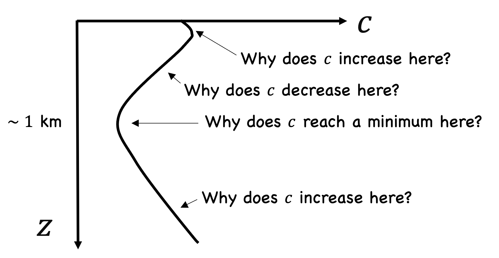
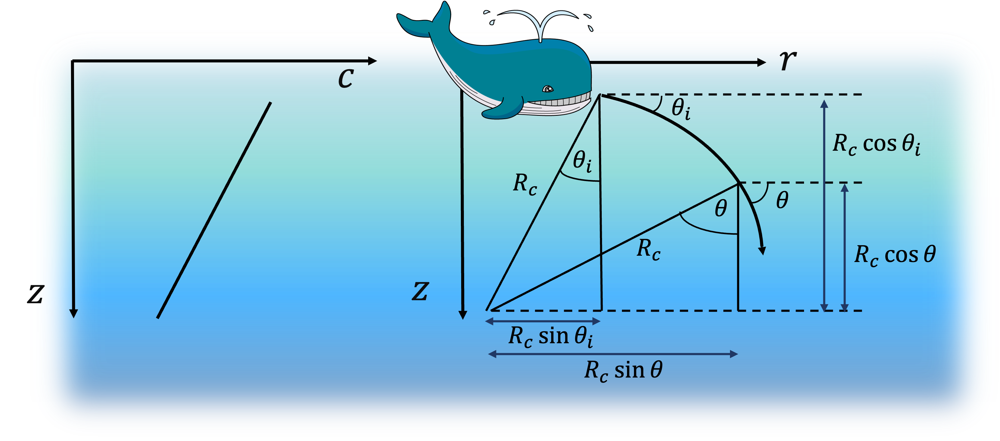
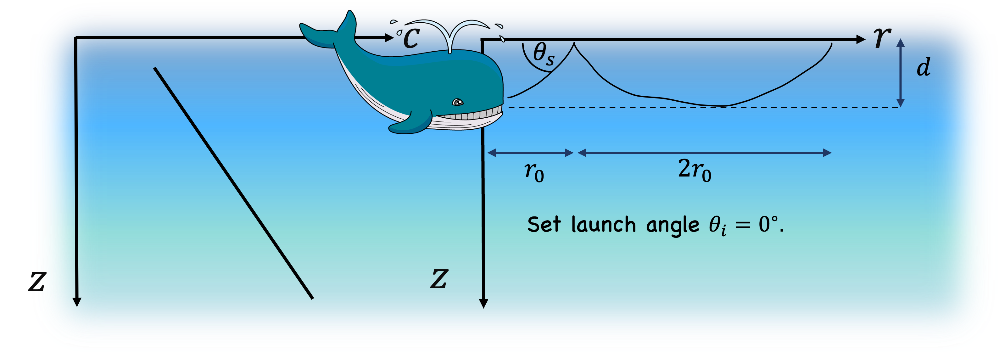

Adapted from figure 8.2(b) from Fundamentals of Physical Acoustics by David T. Blackstock
List any names for the features labeled in the figure.
Find the distance from the source to the vertex by setting \(\theta=0\) and using the expression for \(R_c\) found in problem 18.
In this case, setting \(\theta_i=0\) and using equations (\ref{skippy}) and (\ref{skippy2}), \begin{align*} -d &= R_c(1 - \cos\theta_s)\\ r_0 &= R_c \sin\theta_s\,. \end{align*} Solve for \(r_0\), which is called the cycle distance.